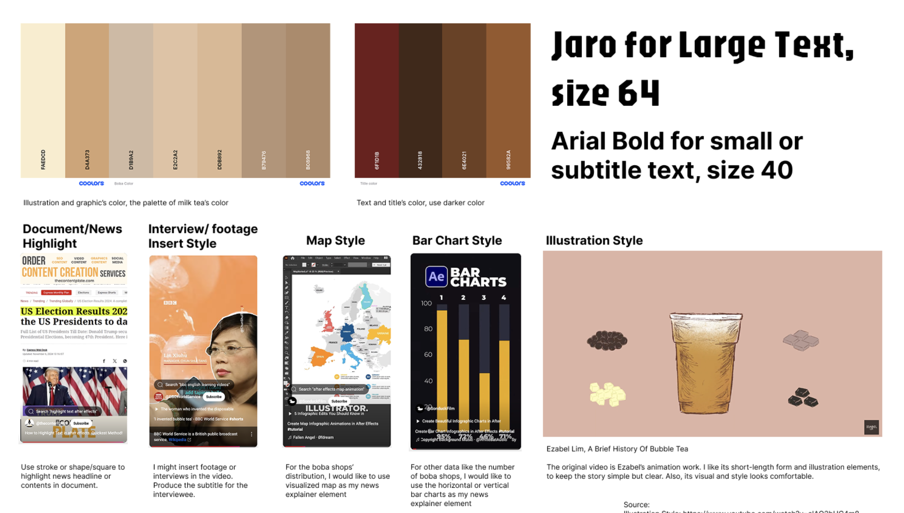
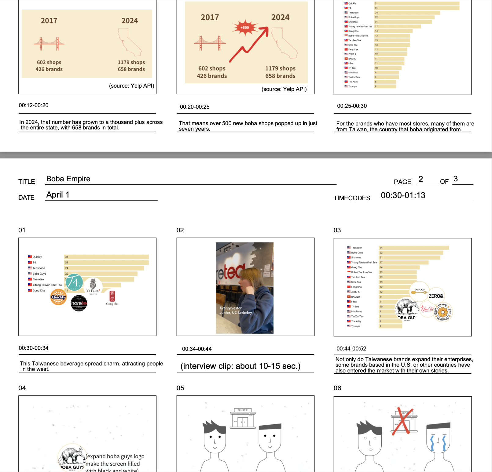

Boba, as known as bubble tea, has become a go-to drink for many people, popping up in cities and suburbs across SF-Bay Area. This video gives an overview of how boba shops have grown over time, where they come from, and why so many people love them.
👇🏻 Watch the complete video.
As a Taiwanese whose blood is basically made of boba, I'm happy to see this drink spreading all over the world and loved by so many people. That pride was one of the inspirations behind this story.
Around the same time, I came across a dataset scraped from the Yelp API, showing the number of boba shops and brands in the SF Bay Area. As soon as I saw the raw data, motion graphics started forming in my head.
I cleaned the data by removing unnecessary columns such as address and rating. Some store names appeared in different formats—like variations in capitalization—but referred to the same brand. I standardized the brand names and cross-checked entries with similar names by verifying their location information on the brands’ official websites. After cleaning the data, I grouped the entries by brand to see the number of shops in each year. I discovered that most of the stores originated from Taiwan rather than being U.S.-based, which helped shape the direction of this story.
Creating the moodboard and storyboard is a journey where I turned abstract ideas into visuals. I came up with a boba-inspired color palette and made sure all the visual elements matched it. I even painted a few small illustrations to give the video a more playful touch.
 